Survival Analysis via Pooled Logistic Regression
Source:vignettes/articles/Survival.Rmd
Survival.RmdReview of Pooled Logistic Regression
Pooled logistic regression is a statistical method for performing a logistic regression that yields parameter estimates that are asymptotically equivalent to those of Cox proportional hazards regression. The procedure works by repeating observations from a conventional survival (or time-to-event) dataset for as many observation periods that each row is observed until either of its event or censoring time. By doing so, the logistic regression can treat the rows associated with a given observation period (e.g., often a day) as the active risk set of observations, and a logistic regression on the indicator of an event yields an approximation to the instantaneous hazard.
As an example (from the Introduction section of Craig et al. 2025), the pooled logistic regression approach works by converting the following original survival dataset:
into the following:
One of the key utilities of the pooled logistic regression approach is that it allows for straightforward incorporation of time-varying-covariates and/or interactions with time.
References on the method:
- Craig, Zhong, and Tibshirani. A review of survival stacking: a method to cast survival regression analysis as a classification problem. Int. J. Biostatistics, 2025 (also on arXiv here)
- Polley and van der Laan. Super Learning for Right-Censored Data, Chapter 16 in Targeted Learning: Causal Inference for Observational and Experimental Data, 2011
- Zivich, Cole, Shook-Sa, DeMonte, and Edwards. Estimating equations for survival analysis with pooled logistic regression. arXiv, 2025
- D’Agostino, Lee, Belanger, Cupples, Anderson, Kannel. Relation of pooled logistic regression to time dependent cox regression analysis: The framingham heart study. Stat Med 1990
- Cupples, D’Agostino, Anderson, Kannel. Comparison of baseline and repeated measure covariate techniques in the Framingham heart study. Stat Med 1988
Examples
Replicating the Table 1 from Craig et al. 2025
To begin with a simple example, we illustrate here the (asymptotic) equivalence of the pooled logistic regression to Cox proportional hazards regression in a single example. In this example, we use the observations from the Rotterdam tumor recurrence dataset. The goal of this example is to be able to compare the Cox proportional hazard model coefficients with the model coefficients from the pooled logistic regression to see that they are close to each other.
library(nadir)
library(dplyr)
library(ggplot2)
library(survival)
library(survivalVignettes) # contains the rotterdam data
library(tidyr)
# extract the original data
df <- rotterdam |> dplyr::filter(nodes > 0)
dim(df)## [1] 1546 15
# 1546 matches the Craig et al paper population
df$dtime <- df$dtime / 365 # put time in years for computing convenience
repeated_measures_df <- df %>%
# group by all the “id‐level” fields
nest_by(pid, dtime, hormon, age, meno, grade, nodes, pgr, er, death) %>%
# for each subject, make one row per integer t in [start, stop]
reframe(
removal_indicator = death == 0 & floor(dtime)-1 < 0,
t = seq(0, ifelse(death == 1, floor(dtime), floor(dtime)-1)),
hormon, # hormone treatment
age, # age
meno, # menopause
grade, # grade
nodes, # positive nodes
pgr, # progesterone
er, # estrogen
event = death, # 1 is a true failure
event = as.integer(event == 1 & t == floor(dtime))
) |>
filter(! removal_indicator) |>
select(-removal_indicator) |>
ungroup()
pooled_logistic_model <- glm(
data = repeated_measures_df,
formula = event ~ hormon + factor(t) + hormon + age + meno + grade + nodes + pgr + er,
family = binomial(link = 'logit'))
tidy_coefficients <- broom::tidy(pooled_logistic_model)
tidy_pooled_logistic_coefs <- tidy_coefficients |> dplyr::filter(
term %in% c('hormon', 'age', 'meno', 'grade', 'nodes', 'pgr', 'er')) |>
dplyr::select(term, estimate, p.value)
# compare to the equivalent Coxph model:
tidy_coxph_coefs <- coxph(Surv(dtime, death) ~ hormon + age + meno + grade + nodes + pgr + er, data = df) |>
broom::tidy() |>
dplyr::select(term, estimate, p.value)
tidy_coefs <- dplyr::left_join(tidy_pooled_logistic_coefs, tidy_coxph_coefs, by = c('term' = 'term'), suffix = c('_logistic', '_coxph'))
tidy_coefs |>
select(term, contains('estimate'), contains('p.value')) |>
knitr::kable(caption = 'Pooled Logistic (log ORs) and Cox Proportional Hazard Coefficient Estimates (log HRs) Side-by-Side')| term | estimate_logistic | estimate_coxph | p.value_logistic | p.value_coxph |
|---|---|---|---|---|
| hormon | -0.2824439 | -0.2978688 | 0.0036511 | 0.0010939 |
| age | 0.0206446 | 0.0199086 | 0.0000171 | 0.0000100 |
| meno | 0.0409336 | 0.0398473 | 0.7494097 | 0.7403544 |
| grade | 0.3872314 | 0.3676658 | 0.0000205 | 0.0000204 |
| nodes | 0.0689977 | 0.0607740 | 0.0000000 | 0.0000000 |
| pgr | -0.0004300 | -0.0004102 | 0.0066412 | 0.0069825 |
| er | -0.0003105 | -0.0002964 | 0.0417136 | 0.0399260 |
The example shown here is just for illustrative purposes. The approximation error in this example can be decreased in this example by coarsening the time-windows less (e.g., carrying out the pooled logistic regression with daily risk sets), but it takes more compute-time to do so.
Comparing and Contrasting Different Approaches to Time
There are at least three ways that time can be handled:
- As the Craig et al. paper describes in the Introduction, as providing the basis for discrete risk sets.
- As another continuous predictor variable with a scalar coefficient on it.
- As another continuous predictor variable with a smoothing spline on it.
See Section 3.1 Functional Form for Time from Zivich et al 2025 for the details.
If time is modeled as a set of distinct indicators for each time-period, then this imposes no additional constraints on the baseline hazard and is most similar to the approach of Cox proportional hazards.
If time is treated as a numeric column with an estimated scalar model coefficient, then this is akin to the restriction of an exponential model.
Finally, using a spline is somewhat in-between.
To illustrate this point, we visualize the following three separate model fits:
# construct a person-period level dataset from the survival::bladder data
repeated_measures_df <- df_to_survival_stacked(
data = survival::bladder,
time_col = 'stop',
status_col = 'event',
covariate_cols = c('rx', 'size', 'number', 'size', 'enum'),
id_col = 'id')
plot_super_learned_pooled_logistic_regression <- function(
data,
formulas,
learners,
extra_learner_args = NULL,
title
) {
sl_fit_for_km <- super_learner(
data = data,
formulas = formulas,
learners = learners,
y_variable = 'event', # TODO: FIX this so y_variable doesn't need to be explicitly passed
outcome_type = "binary",
extra_learner_args = extra_learner_args,
n_folds = 5,
cv_schema = \(data, n_folds) { cv_origami_schema(data = data, n_folds = n_folds, cluster_ids = data$id) },
verbose_output = FALSE
)
# grid for kaplan meier curves
grid1_for_km <- repeated_measures_df %>% distinct(t) %>% mutate(rx = 1)
grid2_for_km <- grid1_for_km %>% mutate(rx = 2)
# calculate hazards
h1_for_km <- sl_fit_for_km(grid1_for_km) # P(event at t | A=0)
h2_for_km <- sl_fit_for_km(grid2_for_km)
# compute survival curves S(t)=Product_{u<=t} [1−h(u)]
surv_df_for_km <- tibble(
t = grid1_for_km$t,
h1 = h1_for_km,
h2 = h2_for_km
) %>%
arrange(t) %>%
mutate(
S1 = cumprod(1 - h1),
S2 = cumprod(1 - h2),
HR = h2 / h1
)
# plot
plt <- ggplot(surv_df_for_km, aes(x = t)) +
geom_step(aes(y = S1, color = "rx=1"), direction = "hv") +
geom_step(aes(y = S2, color = "rx=2"), direction = "hv") +
labs(
y = "Estimated survival probability",
color = "Treatment arm",
title = title
) +
xlim(c(0, max(bladder$stop))) +
ylim(c(0, 1)) +
theme_minimal()
return(plt)
}
# discrete time hazard model:
# most similar to Cox proportional hazards:
plot_super_learned_pooled_logistic_regression(
data = repeated_measures_df,
formulas = list(.default = event ~ rx + factor(t)),
learners = list(lnr_logistic),
title = "Discrete-time survival curves from pooled-logistic SL"
)## Warning in stats::optim(par = weights_before_softmax, fn = loss_fn, method = "Nelder-Mead"): one-dimensional optimization by Nelder-Mead is unreliable:
## use "Brent" or optimize() directly
# continuous time hazard with a scalar coefficient:
# replicates an Exponential continuous-time hazard model:
plot_super_learned_pooled_logistic_regression(
data = repeated_measures_df,
formulas = list(.default = event ~ rx + t),
learners = list(lnr_logistic),
title = "Survival curves from pooled-logistic SL using GLM with time as a numeric column and a scalar coefficient"
)## Warning in stats::optim(par = weights_before_softmax, fn = loss_fn, method = "Nelder-Mead"): one-dimensional optimization by Nelder-Mead is unreliable:
## use "Brent" or optimize() directly
# continuous time hazard with a smoothing spline:
plot_super_learned_pooled_logistic_regression(
data = repeated_measures_df,
formulas = list(.default = event ~ rx + s(t)),
learners = list(lnr_gam),
title = "Survival curves from pooled-logistic SL using GAM with s(t)"
)## Warning in stats::optim(par = weights_before_softmax, fn = loss_fn, method = "Nelder-Mead"): one-dimensional optimization by Nelder-Mead is unreliable:
## use "Brent" or optimize() directly
Since the highly adaptive lasso (HAL) (see https://pmc.ncbi.nlm.nih.gov/articles/PMC5662030/, https://github.com/tlverse/hal9001) has been trending
lately, we also show some examples using HAL. Additionally, we finally
show the utility of the super_learner() to choose/weight
across multiple candidate learners.
truncate_lnr <- function(lnr, min, max) {
truncate <- function(x, min, max) {
pmax(pmin(x, max), min)
}
# needs to return a learner, so it returns a function that
# takes in its inputs and returns a prediction function
return(
function(...) {
predictor_fn <- lnr(...)
truncated_predictor_fn <- function(...) {
truncate(predictor_fn(...), min, max)
}
return(truncated_predictor_fn)
}
)
}
# create a truncated version of the HAL learner
#
# we this here because HAL with family = 'binomial' runs much, much slower than
# HAL with a continuous outcome.
#
# since, in principle, super_learner() will pick/weight the best performing
# models, agnostic of whether or not their functional form is 'correct', it
# should be fine to use a truncated continuous-outcome HAL for demonstrative
# purposes here.
#
# for a real application, we would recommend using `family = 'binomial'` as an
# extra learner argument for HAL.
lnr_truncated_hal <- truncate_lnr(lnr_hal, 0, 1)
# pooling across several learners
plot_super_learned_pooled_logistic_regression(
data = repeated_measures_df,
formulas = list(.default = event ~ rx + t,
unrestricted_baseline_hazard = event ~ rx + factor(t),
gam = event ~ rx + s(t)),
learners = list(unrestricted_baseline_hazard = lnr_logistic,
# exponential = lnr_logistic,
gam = lnr_gam,
hal1 = lnr_truncated_hal,
hal2 = lnr_truncated_hal,
hal3 = lnr_truncated_hal,
hal4 = lnr_truncated_hal,
hal5 = lnr_truncated_hal),
extra_learner_args = list(
hal1 = list(),
hal2 = list(num_knots = 2),
hal3 = list(num_knots = 3),
hal4 = list(num_knots = 10, smoothness_order = 1),
hal5 = list(num_knots = 10, smoothness_order = 2)),
title = "Survival curves from a super learned model"
)## Warning in validate_learner_types(learners, outcome_type): Learners 3, 4, 5, 6, 7 with names [hal1, hal2, hal3, hal4, hal5] do not have attr(., 'sl_lnr_type') == 'binary'.
## See the Creating Learners article on the {nadir} website.
## 
Simulation example showing convergence to the Cox proportional hazard coefficients
This shows we can recover the Cox proportional hazard model coefficients as the time-windows considered get smaller and smaller.
Caution: This code takes about 30-40 minutes to run.
library(future.apply)
plan(multicore) # note that `multicore` requires running this in a terminal (not RStudio)
# on a Unix/Linux machine (not Windows) -- see the future.apply documentation for reference.
#
# The advantage of `multicore` is that forking processes is quite fast, though this is
# not supported in Windows or an RStudio session.
generate_survival_data <- function(
n, # sample size
beta = c(0.5, -0.5, 0.3, 0, 0.2), # true log odds ratio coefficients
baseline_rate = 1,
censor_rate = 0.1 # parameter for the Exponential time-to-censoring distribution
) {
if (length(beta) != 5) stop("`beta` must have length 5.")
# simulate covariates
X <- matrix(rnorm(n * 5), nrow = n, ncol = 5)
colnames(X) <- paste0("X", 1:5)
# linear predictor and event times under Exp(baseline_hazard * exp(eta))
eta <- X %*% beta
U <- runif(n)
T_true <- -log(U) / (baseline_rate * exp(eta))
# independent censoring times ~ Exp(censor_rate)
C <- rexp(n, rate = censor_rate)
# observed times & event indicator
time <- pmin(T_true, C)
status <- as.integer(T_true <= C)
# return data.frame
data.frame(time, status, X)
}
run_coxph_vs_survstack <- function(n = 700, period_duration = 1) {
dat <- generate_survival_data(
n = n,
beta = c(0.8, -0.2, 0.4, 0, 1.2),
baseline_rate = 0.25,
censor_rate = 0.05
)
# fit a cox proportional hazards model
coxph_model <-
coxph(Surv(time, status) ~ X1 + X2 + X3 + X4 + X5, data = dat)
# extract the log odds ratios
coxph_model_coefs <- broom::tidy(coxph_model) |>
select(term, estimate)
# convert the original data into a repeated measures data structure
repeated_measures_df <-
nadir::df_to_survival_stacked(
data = dat,
time_col = 'time',
status_col = 'status',
covariate_cols = paste0('X', 1:5),
period_duration = period_duration
)
# perform the pooled logistic regression
pooled_logistic_model <- glm(
data = repeated_measures_df,
formula = event ~ factor(t) + X1 + X2 + X3 + X4 + X5,
family = binomial(link = 'logit'))
# extract the coefficients
tidy_coefficients <- broom::tidy(pooled_logistic_model)
tidy_coefs_on_tidy_coefficients <- tidy_coefficients |> dplyr::filter(
term %in% c(paste0("X", 1:5))) |>
dplyr::select(term, estimate)
tidy_coefs_on_tidy_coefficients |> arrange(term)
list(
coxph = coxph_model_coefs,
survstack = tidy_coefs_on_tidy_coefficients
)
}
n_sims <- 15
sample_size <- c(50, 200, 500)
period_duration <- c(2, .25, 0.1)
sim_grid <- expand.grid(sample_size = sample_size, period_duration = period_duration)
sim_grid$results <- lapply(1:nrow(sim_grid), \(x) list())
sim_grid$results <- future.apply::future_lapply(1:nrow(sim_grid), function(i) {
cat(".")
results <-
future_lapply(1:n_sims,
\(x) {
run_coxph_vs_survstack(n = sim_grid[[i, 'sample_size']], period_duration = sim_grid[[i, 'period_duration']])
})
results_coxph <- future_lapply(1:n_sims, \(i) { results[[i]][['coxph']] |> mutate(sim = i) }) |> bind_rows()
results_survstack <- future_lapply(1:n_sims, \(i) { results[[i]][['survstack']] |> mutate(sim = i) }) |> bind_rows()
results_coxph <- results_coxph |> mutate(type = 'coxph')
results_survstack <- results_survstack |> mutate(type = 'survstack')
results_df <- bind_rows(results_coxph, results_survstack)
results_df
})
betas <- c(0.8, -0.2, 0.4, 0, 1.2)
betas_df <- data.frame(
term = paste0('X', 1:5),
true_coef = betas)
sim_results <- unnest(sim_grid, cols = 'results')
sim_results <- left_join(sim_results, betas_df, by = c('term' = 'term'))
ggplot(sim_results,
aes(
y = term,
x = estimate,
color = type,
fill = type)) +
ggridges::geom_density_ridges(alpha = 0.5) +
geom_segment(aes(x = true_coef, xend = true_coef,
yend = paste0("X", as.integer(stringr::str_extract(term, "[0-9]"))+1)),
color = 'black') +
facet_grid(factor(period_duration, levels = rev(sort(unique(sim_results$period_duration)))) ~ sample_size, scales = 'free',
labeller = labeller(
.cols = \(x) paste0('sample size: ', x),
.rows = \(x) paste0('time window duration: ', x)
)) +
theme_bw() +
scale_y_discrete(breaks = paste0('X', 1:5)) +
scale_fill_manual(values = c('#5dc6cc', '#FFC377')) +
scale_color_manual(values = c('#3d9595', '#f1b35c')) +
labs(
title = "Simulation results of Cox Proportional Hazard vs. Pooled Logistic Regression",
subtitle = "A variety of sample sizes and time-coarsening window durations are shown; true coefficients in black")
Each scenario is run for 30 iterations. Across the columns the sample size is varied, and across the rows (descending) the time-windows used for constructing the survival stacked data structure is made finer.
Interpretation:
- In the lowest sample size, coarsest time-window simulations (upper
left-hand panel), we can see that both the Cox proportional hazards
model and the pooled logistic regression on survival stacked data have
wide variance.
- Scanning across all sample sizes in the simulations with the coarsest time-window used (top row), we can see that with time-windows that are too coarse, the survival stacking approach may be consistently biased compared to the Cox proportional hazards model.
- If we look at the first column, the simulations where the sample size was low (50) but the time-windows used are increasingly fine-grained, we can see that while increasing the the fineness of the time-windows does not remove all of the uncertainty in estimation, as the time-windows used decrease, the pooled logistic regression approach and the Cox proportional hazards model begin to produce nearly exactly the same estimates.
- Finally, in the higher sample size, fine time-window regime (bottom right), we can see that both the Cox proportional hazards model and the pooled logistic approach with survival stacked data estimate the true parameters with relatively little uncertainty.